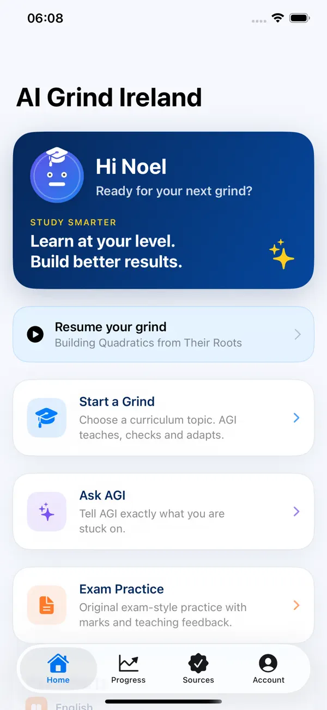
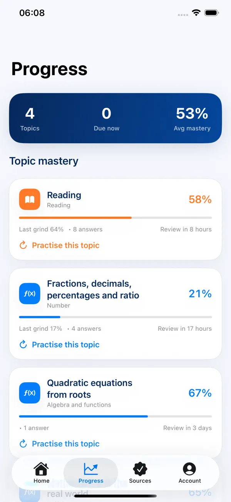
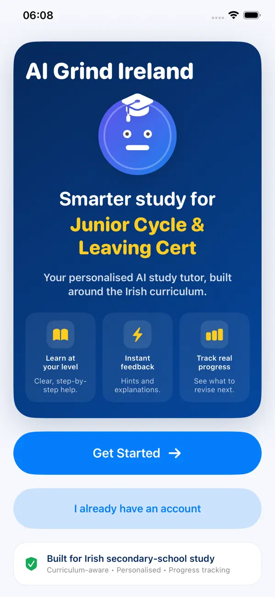
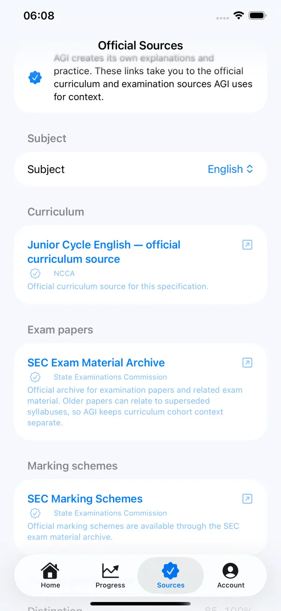
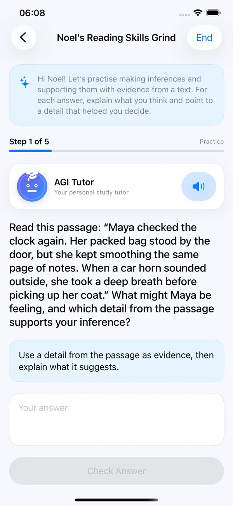

Updated for version 1.1 • Irish Junior Cycle & Leaving Cert
Study smarter. Understand more. Build confidence for your exams.
Choose your school year, subject and level. AGI guides you through a topic, asks you questions, explains mistakes and helps you spot what to revise next. Start with one complete grind free.
Available now for iPhone, iPad and Android. Free to download and try one full grind. Premium plans and any eligible free trials are shown in your app store before purchase; pricing and terms may vary by platform.


Now in AI Grind Ireland 1.1
An easier way to get into a good study session.
Version 1.1 brings a clearer look, a short app video tour before sign-up, easier sign-in and password recovery, and improved subscription and Restore Purchases messages.
Choose your topic
Match your year, subject and level.
Try a full grind free
Learn, answer, get feedback and improve.
Review your progress
Spot topics worth practising again.
Watch AGI in action
See how AI Grind Ireland helps students study.
A guided, captioned look at the app for students and parents. Discover how grinds, practice and progress work together.
A preview of the app experience. Features and screens may evolve as updates are released. AI Grind Ireland is an independent study app.
See the real app
Designed to make study feel clear and manageable.
These are the actual production screens students use in AI Grind Ireland.

Built for Irish studySet up a personalised study experience from the start.
Official sources built inQuick links to curriculum, exam papers and marking schemes.
A real teaching session
Not just another blank AI chat box.
AGI turns a selected topic into a structured, multi-step grind. Students answer, get teaching feedback, move through the session and build a record of what they have actually practised.
Work through one topic without losing focus.
See what was right, what needs work and how to improve.
Hear questions, explanations and feedback aloud when wanted.
Confidence through context
Official curriculum and exam links are only a tap away.
The Sources area gives students direct access to relevant official curriculum pages, State Examinations Commission exam material and marking schemes. AGI keeps the study experience simple while making those reference links easy to reach.
Built around your school programme
Study the programme you actually follow.
AGI filters study choices according to the student’s selected school year, programme, subjects and levels.
For parents & guardians
A clear study tool with useful controls.
Students choose their programme and subjects, progress is tied to curriculum topics, voice is optional, and official-source links are built into the app for easy reference.
AGI keeps personalised study, topic progress and trusted official-source links together in one place.
AGI Premium
Try a full grind free. Continue with Premium.
Both plans unlock the same Premium study features. Choose monthly flexibility or yearly value.
Yearly
- 7-day free trial for eligible Apple IDs
- Personalised grinds
- Exam-style practice
- Adaptive progress & revision
- AGI Voice Tutor
Monthly
- 7-day free trial for eligible Apple IDs
- Same Premium study features
- Flexible monthly access
- Managed through Apple
- Restore Purchases in-app
Android & Google Play
Now available on Android and iPhone.
AI Grind Ireland is now available on Google Play for Android as well as the Apple App Store for iPhone and iPad. Choose the official store for your device to download it.
Download only from the official Apple App Store or Google Play listing to avoid unofficial copies.
AI Grind Ireland is publicly listed on both stores. Install it directly from Apple App Store or Google Play.
Questions
Before you start.
Who is AI Grind Ireland for?
It is designed for Irish secondary-school students across Junior Cycle and Senior Cycle programmes who want focused, topic-by-topic study support.
What makes a Grind different from normal AI chat?
A Grind is a structured session built around a curriculum topic. AGI teaches, asks questions, checks answers, gives feedback and records progress.
Can a student listen to AGI?
Yes. The AGI Voice Tutor can read questions, explanations and feedback aloud. Automatic speaking is optional.
Where can students find official references?
The Sources tab links directly to relevant curriculum and State Examinations Commission resources.
Can I use AI Grind Ireland before subscribing?
Yes. Download the app and sign in to try one complete guided grind. Continued Premium access is offered by subscription, with a 7-day trial where eligible.
Can I get AI Grind Ireland on Android?
Yes. AI Grind Ireland is available on Google Play for Android and on the App Store for iPhone and iPad. Use the download buttons on this page to get the official app.
How are subscriptions managed?
Subscriptions are purchased and managed through Apple. Restore Purchases is available in the app.
Ready for your next grind?
Choose your year and subjects, pick a curriculum topic and let AGI build the study session around you.